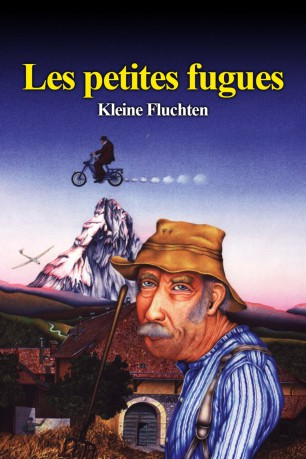

#9311 Kleine Fluchten
 
 IMDB-Wertung: 7.6 / 10
IMDB-Wertung: 7.6 / 10  Metascore: 0
Metascore: 0 
Auf einem Bauernhof mit traditionellen Hierarchien, in dem die Zeit stillgestanden zu sein scheint, vollzieht sich ein erst stiller, dann aber umso heftigerer Umbruch: Der Knecht Pipe, seit mehr als dreissig Jahren eine treue und zuverlässige Arbeitskraft, kauft sich mit seiner Altersrente ein Mofa. Diese für die Bauernfamilie völlig unverständliche Anschaffung verändert schlagartig sein Leben. Der Saisonnier Luigi hilft ihm dabei, allmählich das Gleichgewicht auf den zwei heimtückischen Rädern zu finden. Nach zahlreichen wackligen Versuchen unternimmt Pipe erste Entdeckungsfahrten in der näheren Umgebung und beginnt darüber, seine Arbeit zu vernachlässigen. Auf einem dieser Ausflüge lernt er eine Gruppe von jungen Motorradfahrern kennen, die er an eine Motocross- Veranstaltung mit Festplatz begleitet. Mit verhängnisvollen Folgen.
Jahr: 1979
Dauer: 131 Minuten
FSK: 16
Land: Schweiz Studio: Les Films 2001Tonspuren:
Untertitel:
Auflösung: 1080p (1920x1080) Größe: 8949 MB
Genre: Drama, Komödie
Regisseur: Yves Yersin
Drehbuch: Claude Muret
Soundtrack: Leon Francioli
Darsteller:
 Michel Robin als Pipe
Michel Robin als Pipe- Fabienne Barraud als Josiane
- Fred Personne als John
- Dore De Rosa als Luigi
- Mista Préchac als Rose
- Laurent Sandoz als Alain
- Nicole Vautier als Marianne
- Léo Maillard als Stephane
- Pierre Bovet als Le facteur
- Roland Amstutz als Le conseiller en gestion
- Maurice Buffat als Le garde-police
- Yvette Théraulaz als La pompiste
- Joseph Leiser als Le contremaître de la fabrique de chocolat
- Gerald Battiaz als Le coureur moto 32
- Martine Simon als Bica
- Michel Fidanza als Un mécanicien
- Frédéric Erni als Un mécanicien
- Pierre Malkini als Le présentateur du concours
- Thérèse Storck als Miss moto
- Jean-Marie Verselle als Un voisin de table
- Jean Schlegel als Un voisin de table
- Marcel Robert als Un voisin de table
- Marc Pache als Le jeune motard élégant
- Serge Maillard als Le marié
- Roger Cunéo als Le petit homme furieux
- Jenny Ferreux als La dame à la moutarde
- Raymond Barrat als Le gendarme-chef
- Gilbert Isnard als Un gendarme
- Pierre Arbel als Le garçon de café
- Maurice Aufair als Le boulanger
- Bernd van Doornick als Le pilote de l'hélicoptère
Datei: X:\1979\Kleine Fluchten (1979, FSK16, 1920x1080).mkv seit 27.07.2018
Festplatte: HD 1971-1979
 Es gibt insgesamt 29 Filme in der Gruppe '1979'
Es gibt insgesamt 29 Filme in der Gruppe '1979'